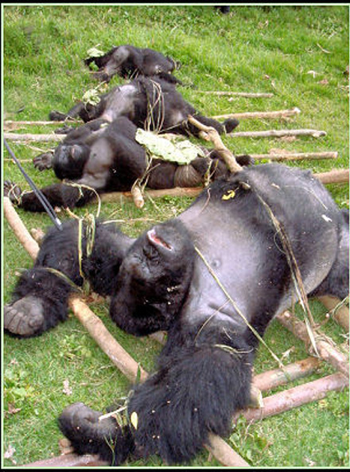

Η σιδερένια πειθαρχία δεν αποκλείει, αλλά αντίθετα προυποθέτει τη συνειδητή και ελεύθερα αποδεκτή υποταγή, γιατί μόνο μία συνειδητή πειθαρχία μπορεί πραγματικά να είναι μια σιδερένια πειθαρχία.
Ι.Στάλιν ( αρχές του Λενινισμού)
| |
Θράπα
Ο Γαβουνές, και ο Μαμουνές, ο Παστροκωλαράκης,
Ο λαγναρμένος Μπιθουλιάν και οι δύο σιαμαίοι Βούζοι.
Ολόκληρα μερόνυχτα συνέχεια θραπακιάζαν, μες στο βουρκί του μαγαζιού του Μπιθουλιάν χλιχλίδαν.
Ο Γαβουνές βαυκάλισε τον Παστροκωλαράκη, οι Βούζοι μακλατέψανε του Γαβουνέ τα οπίσθια.
Ο Μπιθουλιάν γλιβδίκωσε τρία αφτιά των Βούζων και ο Μαμουνές τζιτζίφτισε του Μπιθουλιάν τα ούλα.
Ελευθέριος Δούγιας
| |
«Στο μαβί δειλινό περπατούσα, ενώ το σώμα μου πονούσε απ' τη δουλειά, ανάμεσα στα φώτα της 27ης οδού και της Ουέλτον, στη νέγρικη συνοικία του Ντένβερ, επιθυμώντας να ήμουν νέγρος, με το συναίσθημα πως ό,τι καλύτερο υπήρχε στον κόσμο των Λευκών δεν μου πρόσφερε αρκετή έκσταση, ούτε αρκετή ζωή, χαρά, τρέλα, σκοτεινιά, μουσική, αρκετή νύχτα Ήθελα να 'μουν οτιδήποτε εκτός απ' αυτό που ήμουν, τόσο μελαγχολικά, ένας 'λευκός' χωρίς αυταπάτες. Σ' όλη μου τη ζωή είχα τις φιλοδοξίες ενός Λευκού θέλοντας να μπορούσα να ανταλλάξω τον κόσμο μου με τον ευτυχισμένο, εγκάρδιο και εκστατικό κόσμο των νέγρων της Αμερικής... Πάντοτε έπαιζα στο κολεγιακό, πομπώδες και βλοσυρό στυλ. Καμιά παιδικότητα, καμιά ανθρώπινη ζεστασιά όπως εδώ.... Υπήρχε ζωή στην ατμόσφαιρα, ο κραδασμός μιας αληθινά χαρούμενης ζωής που αδιαφορεί για την απογοήτευση και τις λευκές αγωνίες και όλα αυτά».
Κέρουακ
| |
Οι υπολογιστές έχουν τόση νοημοσύνη όσο τα στερεοφωνικά έχουν μουσικά όργανα.
A. Penzias
| |
Ο ποιητής ρίχνει μποτίλιες στο πέλαγος μήπως βοηθήσει άλλους «θαλασσινούς» σαν κι εκείνον.
Γιώργος Σεφέρης
| |
Κι όμως ήταν πολλοί άνθρωποι πού πνίγηκαν μέσα σε ένα καθρέφτη.
Ramon Gomez De La Serna
| |
Το δανεισμένο πάει γελώντας, και γυρίζει κλαίγοντας.
Μεσαιωνική Κερκυραϊκή παροιμία
| |
Δώσε το χέρι σου στους άλλους για να το φυλάξουν.
Βάλε την τάξη στη θέση της, ανακάτεψε τις πέτρες του δρόμου.
Σχημάτισε τα μάτια σου κλείνοντάς τα.
Κάνε από τα χάδια σου, χάδια για τα χάδια σου.
Λήστεψε τον ήχο από το νόημά του.
Μάθε να περιμένεις με τα πόδια μπροστά σου.
Γίνε ο καθρέφτης της πέτρας που εφαρμόζει μέσα στο καινούργιο τζάμι.
Κάνε μου τη χάρη να μπεις και να φύγεις πατώντας στις μύτες των ποδιών σου.
Χωρίς να ενδώσεις φαντάσου χελιδόνια.
Κοίταξε από κοντά αυτά τα δύο σπίτια : στο ένα είσαι νεκρός και στο άλλο είσαι νεκρός.
Τρώγε πουλιά μόνο σε κατάσταση φύλλου.
Χτύπα την πόρτα και φώναξε : «Έλα μέσα» - και μην μπαίνεις μέσα.
Απόσπασμα απο ποίημα του Σπύρου Μεϊμάρη
[download mp3: shelley_hirsch] | |
Στα 1800 η Αγγλική εταιρία «East India Company» στην προσπάθειά της να αγοράσει τσάι από την Κίνα, και αποφεύγοντας να ανταλλάξει αυτό το αγαθό με ασήμι ή χρυσό, ανακάλυψε ότι το όπιο ήταν η πιο κατάλληλη και η πιο φτηνή λύση εφόσον είχε αποκτήσει τον έλεγχο του Μογγολικού μονοπωλίου της παραγωγής. Η Κίνα είχε επιβάλει πολλούς περιορισμούς στο εμπόριο, και το μόνο λιμάνι που επιτρεπόταν εισαγωγές ήταν η Καντών. Γι’αυτό και η Αγγλική εταιρεία εφοδίαζε και χρηματοδοτούσε ένα στόλο από «ντόπια καράβια» που μετέφεραν λαθραία όπιο από την Ινδία στην Κίνα μέσω Μακάο. Αντίδραση της Κίνας στο ολοένα και εντονότερο πρόβλημα του εθισμού των Κινέζων στο όπιο ήταν να τιμωρεί τους οπιομανείς και να προσπαθήσει να αναχαιτίσει την εισροή οπίου στη χώρα. Όμως τα περιοριστικά μέτρα των Κινέζων χειροτέρεψαν την κατάσταση των οπιομανών και αύξησαν κατακόρυφα την λιανική τιμή του οπίου, ενώ οι Εγγλέζοι χρησιμοποίησαν ταχύτερα καράβια από του Κινέζικου ναυτικού και οργάνωσαν ένα αποτελεσματικότατο σύστημα δωροδοκιών.
Στα 1839, ο Λίν Τσέ Χού, που ακολούθησε σκληρή πολιτική ενάντια στον εθισμό στο όπιο, απόκλεισε τα πλοία της Καντών και απαίτησε από τους Άγγλους να παραδώσουν το όπιο που μετέφεραν στα καράβια τους. Αρχικά οι Εγγλέζοι παρέδωσαν ελάχιστες ποσότητες οπίου, αλλά ο Charles Eliot, εξοργισμένος από τη προσπάθεια των Κινέζων να εμποδίσουν την εξαιρετικά ανθηρή και προσοδοφόρα δραστηριότητα των Άγγλων, ζήτησε από τον Palmerston να του στείλει έναν ισχυρό στόλο, και στα 1840 άρχισε ο πόλεμος του οπίου. Ο πόλεμος αυτός κατέληξε στην παράδοση άνευ όρων των Κινέζων αναγκάζοντάς τους να δεχτούν την εισαγωγή του οπίου, περιλαμβάνοντας το στο «ελεύθερο εμπόριο», κάνοντας το, τη μεγαλύτερη πηγή πλούτου για την Βρετανική κυβέρνηση.
Lawrence Ratna H πολιτική της τοξικομανίας
| |

Οι αρχαίοι Γιαπωνέζοι, εμπνεόμενοι από την αρχαία θρησκεία Σίντο, καταλαβαίνουν την κατασκευή του σπαθιού σα μια αλχημική τέχνη, όπου η εσωτερική αρμονία του μεταλλουργού είναι πιο ενδιαφέρουσα από τις τεχνικές του ικανότητες. Προτού να δουλέψει η λάμα, ο μεταλλουργός μάστορας περνούσε αρκετές μέρες σε διαλογισμό, μετά καθαριζόταν με καθαρμούς κρύου νερού. Ντυμένος με άσπρα ρούχα άρχιζε τότε το έργο του με τις καλύτερες εσωτερικές συνθήκες, για να δώσει τη γέννηση σε ένα όπλο ποιότητας.
Ο Μασαμούνε κι ο Μαρασάμα ήταν οι πιο φημισμένοι οπλουργοί του 16ου αιώνα. Και οι δύο κατασκεύαζαν όπλα εξαιρετικής ποιότητας. Ο Μαρασάμα, που είχε βίαιο χαρακτήρα, ήταν ένας άνθρωπος σιωπηλός και ανήσυχος. Είχε την παράδοξη φήμη πως έφτιαχνε λάμες φοβερές που τραβούσαν τους ιδιοκτήτες τους σε μάχες αιματηρές ή που ακόμα πως κάποτε πλήγωναν και αυτούς που τις κρατούσαν. Αντίθετα ο Μασαμούνε ήταν εξαιρετικά γαλήνιος και εφάρμοζε την ιεροτελεστία της κάθαρσης για να φτιάξει τις λάμες του. Σήμερα θεωρούνται οι καλύτερες της χώρας.
Ένας άντρας που ήθελε να δοκιμάσει τη διαφορά της ποιότητας ανάμεσα στους τρόπους κατασκευής των δύο οπλουργών, τοποθέτησε το σπαθί του Μαρασάμα σε ένα ρέμα νερού. Όποιο φύλλο έβγαινε στην επιφάνεια και άγγιξε τη λάμα, κόπηκε στα δύο. Μετά τοποθέτησε στο ρέμα του νερού ένα σπαθί κατασκευασμένο από τον Μασαμούνε. Τα φύλλα φαίνονταν να το αποφεύγουν. Κανένα δεν κόπηκε, γλιστρούσαν όλα, άθικτα, κατά μήκος της κόψης, σαν αυτή να ήθελε να τα γλιτώσει.
Ο άνθρωπος τότε είπε : « Το σπαθί του Μαρασάμα είναι τρομερό, το σπαθί του Μασαμούνε είναι ανθρώπινο».
Albin Michel Spiritualites vivantes
| |
Χειμωνιάτικη
βροχή : δείχνει σαν παλιό
ό,τι βλέπουμε.
Yosa Buson (1700 μ.χ.)
| |
Σάββατο 13 / 10 στίς 10 : 00 το βράδυ περίπου
Στο Πεδίο του Άρεως στο : Indie Free Festival
είσοδος ελεύθερη.
| |
Αρκαδικά νέα
Η νέα κυνηγητική περίοδος για το αγριογούρουνο αρχίζει στην Αρκαδία στις 15 Σεπτεμβρίου και τελειώνει στις 26 Φεβρουαρίου. Στο διάστημα αυτό πολλά θα δουν τα μάτια μας, περισσότερα θα ακούσουν τ’ αυτιά μας.
Στη περιοχή της Μεγαλόπολης κάθε χρόνο είχαμε μάχες μεταξύ ομάδων κυνηγών για το ποια ομάδα θα «πιάσει» πρώτη τους τόπους, τα περάσματα του αγριογούρουνου !!
Ως γνωστόν, το κυνήγι του αγριογούρουνου γίνεται από ομάδες των 10 – 12 ατόμων, ενίοτε και κατά περιόδους πολλές ομάδες απαρτίζονται και από σαράντα (40!!!) κυνηγούς. Αυτές οι ομάδες θέλουν χώρο ζωτικό να κινηθούν, κάπου εκεί αρχίζουν και τα προβλήματα με το ντόπιο στοιχείο.
Για παράδειγμα, στην περιοχή της Ηραίας βρισκόταν εγκατεστημένη (!!) η ομάδα του «Τράπεζα» από την περιοχή της Πάτρας, αποτελούμενη συνήθως από 40 – 50 κυνηγούς. Στρατοπέδευαν κατά ομάδες σε περάσματα από το απόγευμα της προηγουμένης μέρας του κυνηγιού και δεν άφηναν ούτε τους αγρότες να πάνε στα χωράφια τους !!
Η ομάδα αυτή απλωνόταν από τα βουνά της Ηραίας μέχρι και τα βουνά των Τροπαίων( !!) , πάντα υπό τις διαταγές του «Τράπεζα» ο οποίος καθισμένος σε τραπέζι εκστρατείας –ως άλλος Ξέρξης επί του όρους Αιγάλεω!--κατηύθυνε από επιλεγμένο διάσελο το κυνήγι. Απ’ ό,τι μαθαίνω, στη περιοχή αυτή της Βορειοδυτικής Αρκαδίας, δημιουργήθηκαν νέες ομάδες από ντόπιους κυνηγούς. Βλέπω τον «Τράπεζα-Ξέρξη» να στήνει αλλού το επιτελείο του !!
Τον περασμένο χρόνο στο χωριό Παλιοχώρι της Δημητσάνας, οι κάτοικοι με ανακοίνωση καλούσαν τους κυνηγούς να τους σώσουν από τα αγριογούρουνα !! Το χωριό αυτό βρίσκεται δίπλα στο φαράγγι του ποταμού Λούσιου, περιοχή απαγορευμένη για το κυνήγι.
Αρκετοί είναι οι κυνηγοί που «βγαίνουν» το βράδυ και όποιον πάρει ο χάρος. Άλλοι με τους προβολείς, άλλοι στις πηγές, Αυτό βέβαια δεν λέγεται κυνήγι αλλά έγκλημα. Αυτοί πρέπει να αντιμετωπίζονται ως παραβάτες του ποινικού κώδικα. Κάποιοι άλλοι, κλείνουν τους αγροτικούς δρόμους απαγορεύοντας σε οποιονδήποτε «ξένο» να κυκλοφορήσει στο βουνό ελεύθερα.
Έπεσα κι εγώ θύμα μιας τέτοιας απαγόρευσης το χειμώνα που μας πέρασε. Πηγαίνοντας το ξημέρωμα να αγναντέψω την ανατολή του ήλιου σε κάποια κορφή, ο κυνηγός – φύλακας (!!) προτάσσοντας το κορμί του και το αμάξι του, με τσαμπουκά δεν μου επέτρεψε τη βόλτα στο βουνό. Με τον διάλογο μου έκανε τελικά τη χάρη !!
| |

Ευρυτανικά Νέα | Τοπική εφημερίδα στο Καρπενήσι και την Ευρυτανία ...
Πάνε κάμποσες μέρες που άρχισε η κυνηγητική περίοδος, και άπαντες οι κάτοχοι όπλων πήραν τα βουνά και τα ρουμάνια προς αναζήτησιν θήρας. Αν και δεν είναι λίγες οι περιπτώσεις που βρίσκουν τη …θύρα κλειστή και επανέρχονται με το σακούλι άδειο και την καρδιά γεμάτη απογοήτευση, εντούτοις αυτό δεν πτοεί κανέναν και από νωρίς το πρωί του Σαββατοκύριακου, αλλά και των υπόλοιπων ημερών η μυρουδιά της μπαρούτης και ο ξερός ήχος της καραμπίνας γεμίζουν το αγουροξυπνημένο δάσος.
Για όποιον δεν κυνηγάει, το σπορ φαντάζει απάνθρωπο και δίχως νόημα. Για όποιον κυνηγάει είναι από τα ευγενέστερα. Φυσικά κανείς δεν δικαιούται να καταφέρεται με μανία εναντίον των κυνηγών, παρά μόνο αν είναι χορτοφάγος. Διαφορετικά, είτε κοτόπουλο σφάξεις, είτε μοσχάρι σκοτώσεις, είτε μπεκάτσα κυνηγήσεις, το ίδιο και το αυτό είναι…
Όλος ο δρόμος που πάει προς Στένωμα, την Κυριακή το πρωί, ήταν κατειλημμένος από κυνηγούς που είχαν πάρει τα βουνά, ψάχνοντας για το περιπόθητο θήραμα. Διαμαρτύρονται λοιπόν οι κυνηγοί για την έλλειψη θηραμάτων, αλληλοβρίζονται γιατί δεν τηρούνται οι κανόνες του κυνηγετικού σαβουάρ βιβρ. Πώς είναι δυνατόν όμως, όταν συνωστίζονται δέκα και δεκαπέντε άνθρωποι σε μια απόσταση 3 - 4 χιλιομέτρων να γίνουν σεβαστά τα δικαιώματα του άλλου; Είναι δυνατόν να δεις να περνάει μπροστά σου ο λαγός και να μην του ρίξεις, έστω κι αν τον έχει καταπόδι το σκυλί του άλλου; Αυτά γινόταν τότε που οι κυνηγοί είχαν συναίσθηση της θέσης τους και γνωρίζονταν μεταξύ τους. Αυτό που γίνεται όμως στις μέρες μες κάθε άλλο παρά με σπορ μοιάζει. Ακούγεται πως μόνο οι κυνηγοί αγριογούρουνων τηρούν κάποιους στοιχειώδεις κανόνες σεβασμού των δικαιωμάτων των άλλων κυνηγών.
Δεν θα ήταν όμως καλύτερο αν για ένα διάστημα έμπαινε κάποιος φραγμός; Η Ελλάδα είναι υπόδικη στο Ευρωπαϊκό διακαστήριο γιατί επιτρέπει το κυνήγι και κατά το Φεβρουάριο πράγμα που ρητώς απαγορεύεται από τις ευρωπαϊκές οδηγίες.
Βρέθηκε πάντως μια τέλεια πατέντα - ακραιφνώς ελληνική: Το κυνήγι σταματάει τον Φεβρουάριο, αλλά για ορισμένα μόνο είδη: το εξής κανένα! Ορίζονται διαφορετικές ημερομηνίες λήξης της κυνηγετικής περιόδου για παραπλήσια είδη πουλιών. Αυτό πρακτικά σημαίνει ότι ένας κυνηγός, την ώρα που σηκώνει το όπλο του, θα πρέπει να μπορεί να ξεχωρίσει ότι το πουλί που σημαδεύει είναι Χουλιαρόπαπια και όχι Κυνηγόπαπια και να έχει στο μυαλό του, ότι εάν είναι Φεβρουάριος επιτρέπεται να χτυπήσει την πρώτη αλλά όχι τη δεύτερη.
Αλλά ακόμα και αν συνέβαιναν όλα αυτά, μόνο το γράμμα του νόμου θα τηρούνταν εφόσον ο βασικός λόγος ύπαρξης της νομοθεσίας δεν υπηρετείται: η νομοθεσία γίνεται για να προστατευθεί η αναπαραγωγή των πουλιών και άρα η συνέχεια του είδους. Κάτω από τους ήχους των πυροβολισμών όμως είναι σίγουρο ότι κανένα είδος δεν αναπαράγεται. Άλλωστε ποιος θα πληροφορήσει την κυνηγόπαπια ότι εφόσον είναι Φεβρουάριος τα σκάγια δεν προορίζονται γι' αυτήν;
Επειδή όμως τα πράγματα εδώ είναι αρκετά διαφορετικά, οι "άτυχοι" κυνηγοί του Σαββατοκύριακου έχουν εφεύρει μια διαφορετική μέθοδο: Δεν βρίσκουν θήραμα στο δάσος; Κανένα πρόβλημα. Κυνηγάνε μέσα στην πόλη! Το Καρπενήσι όπως ξέρουμε όλοι, είναι τσιμεντοποιημένο μόνο στις περιοχές γύρω από την πλατεία.
Στις παρυφές του, που δεν είναι δα και πολύ μακριά από το κέντρο, υπάρχουν σπίτια χωμένα μέσα στο πράσινο. Σπίτια που με την οικιστική τους λειτουργία πολλές φορές δίνουν τροφή και καταφύγιο σε αρκετά θηράματα, κυρίως πετούμενα.
Αυτό έχει ως συνέπεια κάποιες μέρες, να πάει κανείς να περπατήσει ας πούμε στη Μεσοχώρα και να νομίζει ότι βρίσκεται στα …ύψίπεδα του Γκολάν με τα αδέσποτα σκάγια να πέφτουν σε σκεπές και τσίγκους και να δημιουργούν την εντύπωση ότι βρέχει!
| |
ΑΙΤΗΣΗ ΠΡΟΣ ΤΟ ΔΑΣΑΡΧΕΙΟ ΛΙΜΝΗΣ ΕΥΒΟΙΑΣ (17/1/1995)
Στις 29/6/94 σας καταθέσαμε γραπτή αίτηση ο κάθε ένας από εμάς, όπου ζητούσαμε τα εξής:
"Παρακαλώ να μου επιτρέψετε να απαγορεύσω το κυνήγι μέσα στον ελαιώνα μου στις Ροβιές. Η απαγόρευση θα ισχύει από την έναρξη της κυνηγετικής περιόδου ως την πλήρη αποπεράτωση της συγκομιδής του καρπού (ΝΔ 86/1969 άρθρο 256). Παρακαλούμε ιδιαιτέρως να λάβετε υπ' όψιν σας:
1. Οτι καθ' όλη την διάρκεια της κυνηγετικής περιόδου εκτελούνται διάφορες εργασίες μέσα στο κτήμα εκτός και πέραν της συγκομιδής του καρπού (π.χ. ψεκασμοί, κλάδεμα, φύτεμα κ.λ.π.), που επανειλημμένως κατά το παρελθόν έχουν γίνει με άγχος λόγω της πιεστικής παρουσίας των κυνηγών.
2. Οτι, επίσης επανειλημμένως κατά το παρελθόν, έχουμε διαπιστώσει ότι οι κυνηγοί, μη βρίσκοντας πλέον νόμιμα θηράματα σκοτώνουν πολύτιμα για τον ελαιώνα πλάσματα, όπως γεράκια, κουκουβάγιες και γάτες. Πέρσι βρέθηκαν δύο σκοτωμένες ποντικοβαμβακίνες σε απόσταση 300 μέτρων από την αποθήκη ελαίων του Συνεταιρισμού. Αν σε μια έκταση τόσο μικρή και πολυσύχναστη γίνεται τέτοια ζημιά, φαντάζεστε τι γίνεται πλατύτερα".
Επί πλέον προσδιορίσαμε τις θέσεις όπου βρίσκονται τα κτήματα μας.
Λίγο καιρό αφού σας καταθέσαμε τις αιτήσεις αυτές, μας ειδοποιήσατε προφορικά ότι δεν χρειάζεται γραπτή έγκρισή σας, γιατί το δικαίωμα απαγόρευσης μας δίνεται από τον νόμο, και να ετοιμάσουμε και τοποθετήσουμε σε περίοπτες θέσεις απαγορευτικές πινακίδες. Το οποίο κάναμε λίγες μέρες πριν αρχίσει η κυνηγητική περίοδος.
Μέχρι πριν μία εβδομάδα, δεν αντιμετωπίσαμε προβλήματα. Εκτοτε, αφού άρχισε το δριμύτερο κρύο, και κυρίως αφού χιόνισε στα γύρω βουνά και έτσι αναγκάσθηκαν τα πουλιά να κατέβουν στον κάμπο του ελαιώνα για να προστατευθούν και να βρουν κάποια τροφή, η πίεση των κυνηγών και μέσα στα δικά μας κτήματα γίνεται όλο και πιο φορτική. Ερωτώμενοι από μας "γιατί δεν σέβονται την θέληση μας, που έχουμε ανακοινώσει και με τις πινακίδες αλλά και προφορικά μέσα στο χωριό, και τους είναι γνωστή;" μας απαντούν ότι "το Δασαρχείο μας είπε ότι μπορούμε να κυνηγάμε και στα δικά σας κτήματα μέσα."
Αυτό αν αληθεύει είναι πολύ βαρύ. Είμαστε όλοι άνθρωποι που δεν συνηθίζουμε να παρανομούμε και συνεπώς μας ενοχλεί αφάνταστα να πιστεύουν οι συγχωριανοί μας ότι η απαγόρευση του κυνηγιού στα κτήματά μας είναι αυθαιρεσία.
Γι' αυτό σας παρακαλούμε να μας απαντήσετε εγγράφως ποια είναι η θέση σας στο θέμα αυτό. Παρακαλούμε δε να μας απαντήσετε σε όσο το δυνατόν λιγότερες μέρες ώστε να προλάβουμε τις δύσκολες μέρες των χιονιών.
Οι αιτώντες: Νίκος Γ. Βαλλής, Αργίνη Α. Παπαδοπούλου, Αντώνης Ι. Μπαρέτ, Νίκος Κ. Πορτοκαλίδης.
| |
http://ropotamo.com/NewSite/index.php
Δείτε τον κυνηγότοπο από Βουλγαρία όπου στη διαφήμισή του στα ελληνικά γράφει : ΚΑΤΑ ΤΟ ΚΥΝΗΓΙ ΜΕ ΚΑΤΑΔΙΩΞΗ ΤΕΛΗ ΓΙΑ ΑΝΕΠΙΤΥΧΗ ΒΟΛΗ, ΤΡΑΥΜΑΤΙΣΜΕΝΟ ΑΛΛΑ ΜΗ ΑΝΑΚΑΛΥΦΘΕΝ ΘΗΡΑΜΑ ΔΕΝ ΠΛΗΡΩΝΟΝΤΑΙ. Η ΚΥΝΗΓΕΤΙΚΗ ΟΜΑΔΑ ΔΕΝ ΠΛΗΡΩΝΕΙ ΤΕΛΟΣ ΓΙΑ ΤΗΝ ΟΡΓΑΝΩΣΗ ΤΗΣ ΚΑΤΑΔΙΩΞΗΣ
Kαι οι τιμές είναι : Το τρόπαιο πληρώνεται επί της βάσεως του βάρους σε κιλά , το οποίο μετράται με την άνω σιαγόνα
ΕΥΓΕΝΕΣ ΕΛΑΦΙ - CERWUS ELAPHUS L
Ελάφι (Σκαφτιάς) - CERVUS DAMA L
ΖΑΡΚΑΔΙ - CAPREOLUS CAPREOLUS L
ΑΓΡΙΟΓΟΥΡΟΥΝΟ - SUS SCROFA L κ.λ.π.
| |
‘Οποιος δηλώνει συνεχώς ότι δεν είναι ανόητος κάτι υποπτεύεται.
W. Mizner
| |
Η φύση αγαπά να κρύβεται.
Ηράκλειτος
| |
Έζησα κοντά στους ζωντανούς ανθρώπους
και αγάπησα τους ζωντανούς ανθρώπους
όμως η καρδιά μου ήταν ποιο κοντά
στους άγριους άρρωστους με τα φτερά
στους μεγάλους απεριόριστους τρελούς
κι ακόμα στους θαυμάσια πεθαμένους.
Μίλτος Σαχτούρης
| |
Πηγαίναμε συχνά στους Ντυτέ : κάναμε εκεί μαθήματα ηθικής και μερικές φορές χειρότερα πράγματα.
Le Princede Ligue
| |

Για πρώτη φορά, ζούσε σε σπίτι πλουσίων. Η πορσελάνη της Καντόνας μέσα στην οποία γευμάτιζαν, μαρτυρούσε πώς ο πατέρας τους είχε υπάρξει από τους πρώτους που έστειλαν προς την Κίνα εμπορικό στόλο, ταξίδι με τόσους κινδύνους που υπολόγιζαν, από την αρχή, στις ζημιές, το ένα τρίτο των σκαφών και των πληρωμάτων. Αυτή η ήδη παλαιά περιουσία τους έδινε τα πλεονεκτήματα και τις ανέσεις των ανθρώπων που είχαν γεννηθεί πλούσιοι. Οι απώλειες σε ανθρώπινες ζωές, οι αδικίες και ο δόλος, που είναι αξεχώριστα από κάθε απόκτηση μεγάλου πλούτου, είχαν γίνει πριν από τον καιρό τους και από άλλους, και εκείνοι, και όχι αυτοί, ευθύνονταν για αυτά. Η χλιδή είχε πάρει ένα είδος ήρεμης πατίνας. Εδώ μέσα σε αυτό το σπίτι, το χρήμα έμοιαζε να ανανεώνεται και να γεννιέται μόνο του : ούτε το αδιάκριτο κουδούνισμα του δεν άκουγες. Μεταμορφωνόταν στο μάρμαρο που πλαισίωνε τη φωτιά στα ψηλά τζάκια, ροχάλιζε ήπιο μέσα στις θερμάστρες από πορσελάνη, εδώ ήταν παρκέτο και εκεί πλάκες με ζωγραφιές και παραπέρα χαλί, όπου πνίγονταν τα βήματα.
Μαργαρίτα Γιουρσεναίρ
| |
Ο Δόν Αλεχάνδρο φιλοδοξούσε κάποτε να μπει στην Εθνοσυνέλευση της Ουρουγουάης, αλλά οι κομματάρχες του έφραξαν τον δρόμο. Οργισμένος αποφάσισε να ιδρύσει μία άλλη Συνέλευση, σε πολύ μεγαλύτερη κλίμακα. Στις εκρηκτικές σελίδες του Καρλάυλ είχε διαβάσει την ιστορία του Ανάχαρσι Κλούτς, εκείνου του λάτρη της θεάς λογικής που, επικεφαλής μιας ομάδας τριάντα έξι ξένων, μίλησε σε μία Παρισινή συγκέντρωση ως «εκπρόσωπος της ανθρωπότητας». Παρακινημένος από αυτό το παράδειγμα, ο Δόν Αλεχάνδρο συνέλαβε την ιδέα να συγκαλέσει μία Παγκόσμια Συνέλευση που θα αντιπροσώπευε όλους τους ανθρώπους από όλα τα έθνη. Το κέντρο των προκαταρκτικών συνεδριάσεων ήταν το καφενείο της Γκαζόλαμπας. Η μόνη πληρωμένη θέση ήταν της γραμματέως, που δεν είχε άλλα μέσα και που, ταυτόχρονα, έκανε μια καταπληκτική δουλειά. Το να στήσεις μια παγκόσμια οργάνωση δεν είναι ασήμαντη επιχείρηση. Γράμματα και τηλεγραφήματα πηγαινοέρχονταν συνεχώς. Πιθανοί αντιπρόσωποι έγραφαν από το Περού, τη Δανία και τις Ινδίες. Ένας Βολιβιανός έγραψε ότι το πρόβλημα που αντιμετωπίζει η χώρα του εξαιτίας της απουσίας πρόσβασης στη θάλασσα, θα πρέπει να αποτελέσει αντικείμενο πρωταρχικής σημασίας στις πρώτες μας συνεδριάσεις.
Χ.Λ.Μπόρχες
| |
Δόξα σε εμένα.
Πόσο θαυμάσια είναι
η μεγαλοπρέπειά μου.
Αμπού Γιαζίντ Μπισταμί ( 9ος Αιώνας μ.χ.)
| |
|
35 readers online
|